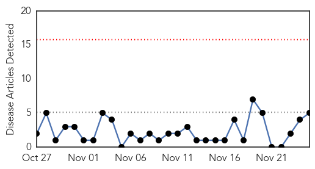
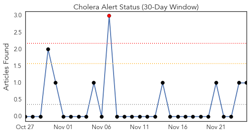
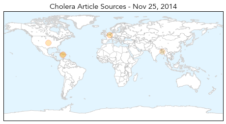
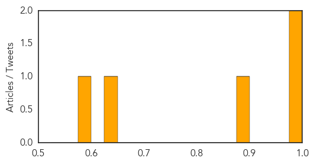

Cholera
30-Day Web Trend
0 alerts, 0 warnings

30-Day Twitter Trend
1 alerts, 0 warnings

Article Locations
Article Confidences
Top Articles:
Top Tweets:
- 0.954
- Ebola-watchers, don't forget the UN most likely gave Haiti cholera (say UN's own experts). So FF on that: http://t.co/LvXtclpunC
Influenza
30-Day Web Trend
3 alerts, 0 warnings

30-Day Twitter Trend
1 alerts, 0 warnings

Article Locations

Article Confidences

Top Articles:
- 0.999
- New PSA Reminds College Students That Vaccination Is the Best Form of Protection Against Dangerous Flu Virus
- 0.999
- Montana flu season in full swing
- 0.996
- Flu-related hospitalizations unusually high this time of year, Cuyahoga County health officials report
- 0.995
- Cambridge health experts urge people to get the give flu a knock-out blow this winter
- 0.971
- Mandatory health-care worker flu shots lagging in Vancouver despite looming deadline
- 0.966
- India Culls Ducks After Bird Flu Outbreaks in Kerala
- 0.965
- India orders culling after new bird flu outbreaks
- 0.960
- New Bird Flu Strain Reaches Europe
- 0.946
- Bird Flu Scare Grips Kerala; Causes Panic in Neighbouring States
- 0.928
- Door to Door Survey for Bird Flu
- 0.895
- Red alert in Kerala over avian flu, over 200,000 birds to be culled
- 0.872
- Miller County Health unit hosts mass flu clinic
- 0.868
- Avian influenza kills 17,000 ducks in Central Kerala, India
- 0.862
- Bird flu scare in Kerala
- 0.786
- Avian flu: red alert in border districts
- 0.739
- As bird flu spreads, shortage of preventive drugs a worry
- 0.731
- Avian flu in Kerala: About 200,000 birds to be culled
- 0.702
- Kerala to begin culling ducks to contain bird flu
- 0.530
- Wales on the alert for bird flu after Yorkshire duck farm case
Top Tweets:
-
No tweets found for Nov 25, 2014